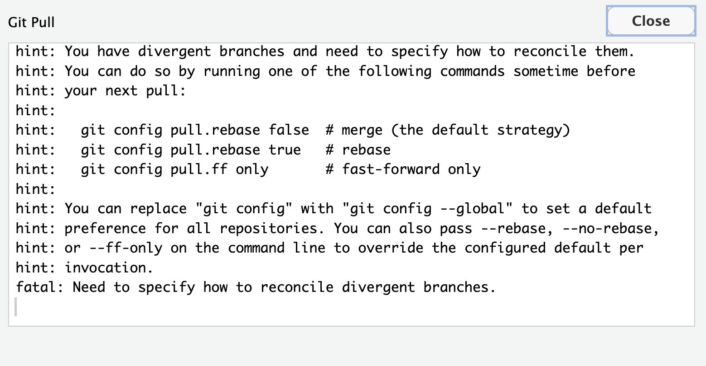

Practice how to set up GitHub Authentication using a Personal Access Token (PAT)
3.1 Set up global options in Git
Before using Git, you need to tell it who you are, also known as setting the global options. You can do this either on the terminal using git command or in the console using the R package usethis. For this lesson we will use the usethis package. However, you can also find the git commands to reference in the future.
What’s the Terminal?
Technically, the Terminal is an interface for the shell, a computer program. To put that simply, we use the Terminal to tell a computer what to do. This is different from the Console in RStudio, which interprets R code and returns a value.
You can access the terminal through RStudio by clicking Tools > Terminal > New Terminal.
A Terminal tab should now be open right next to the Console tab.
Don’t be afraid to dip your toes in the Terminal
Most of our Git operations will be done in RStudio, but there are some situations where you must work in the Terminal and use command line. It may be daunting to code in the Terminal, but as your comfort increases over time, you might find you prefer it. Either way, it’s beneficial to learn enough command line and to feel comfortable in the Terminal.
To introduce ourselves to git we are going to use the function usethis::use_git_config(), followed by usethis::git_default_branch_configure(). This will update our global options with our GitHub user name and email information.
Below you will find code to do this in the console using functions from the usethis package and the terminal using git commands.
Make sure to type your exact GitHub username and email associated to your GitHub account.
Add you exact same GitHub user name. Case and spelling matters!
2
Set up your email address associated to you GitHub account.
3
Setting “merge” as the default strategy to integrate changes from one branch into another branch (for all repos). Check the note at the end of this chapter for more details.
Step 2: define the name of the branch that gets created when you make the first commit in a new Git repo
Step 2: define the name of the branch that gets created when you make the first commit in a new Git repo.
git config --global init.defaultBranch main
Step 3: check to make sure everything looks correct.
The following command return the global options you have set.
git config --global--list
Case and spelling matters!
When you add your username and email to the global options you must use the exact same spelling and case that you used on GitHub otherwise, Git won’t be able to sync to your account.
Why set the default branch name to main?
Previously, the default branch name was master and this racist terminology for Git branches motivates us to update our default branch to main instead.
Set a long timeout for the git cache
Finally, we will run a step that is only necessary when working on a server. We need to set our credentials to not time out for a very long time. This is related to how our server operating system handles credentials - not doing this will make your Personal Access Token (PAT, which we will set up in the next section) expire after 15 min on the system, even though it is actually valid for at least a month. We will do this configuration in the terminal.
You can access the terminal through RStudio by clicking Tools > Terminal > New Terminal.
IMPORTANT!!
DO NOT RUN THE NEXT LINE when setting up Git and GitHub on your Personal Computer
By running the following command we are asking git to store our credential information in the cache for 10 million seconds (almost 4 months).
We will be using a Personal Access Token (PAT) in this course. For better security and long term use, we recommend taking the extra steps to set up SSH keys (check out Chapter 10 Set up Keys for SSH).
Setting up your PAT
Run usethis::create_github_token() in the Console.
A new browser window should open up to GitHub, showing all the scopes options. You can review the scopes, but you don’t need to worry about which ones to select this time. The previous function automatically pre-selects some recommended scopes. Go ahead and scroll to the bottom and click “Generate Token”.
Copy the generated token.
Back in RStudio, run gitcreds::gitcreds_set() in the Console.
Paste your PAT when the prompt asks for it.
Last thing, run usethis::git_sitrep() in the Console to check your Git configuration and that you’ve successful stored your PAT. Note: look for Personal access token for 'https://github.com': '<discovered>'
If you see <unset> instead of <discovered> means your PAT is not correctly set. You need to troubleshoot.
Congrats! Now you’ve setup your authentication you should be able to work with GitHub in RStudio now.
3.3 Strategy to integrate changes from one branch into another
Above we configured our global options for all the repositories you create in your server session to use pull.rebase = "false" as the strategy to integrate changes from two branches. With this we are saying to merge changes (as opposed to rebasing).
It is important to highlight that this configuration can be repo specific. This mean, you can configure how you want git to reconciling two branches at a repository level and not “for all repositories”. Allowing you to control on how git weaves things in when collaborating with others.
If you don’t define pull.rebase = "false" when setting the global configurations, you will have to define this for each repository you create. You will likely see the following message after you pull, meaning you have not define how to reconciling two branches in your repository.

To solve this issues you have to run either of the two suggested strategies on the terminal.